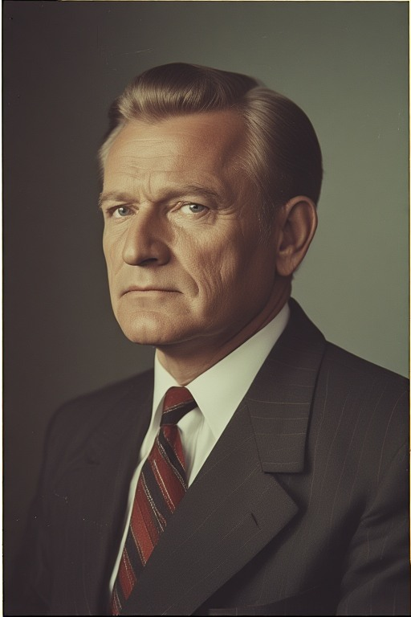
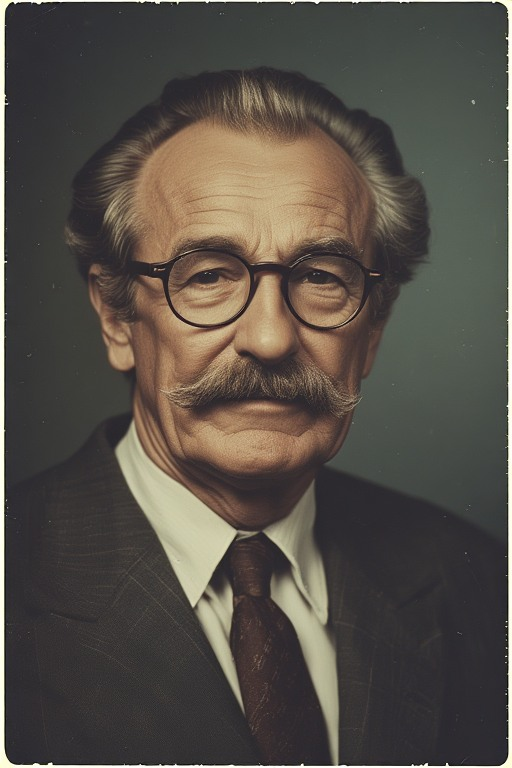
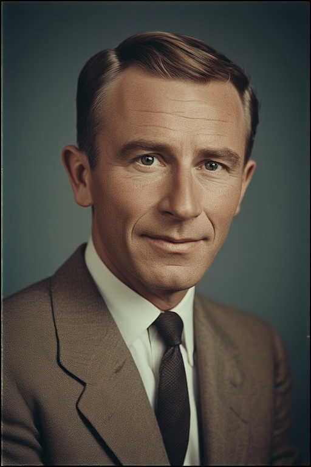
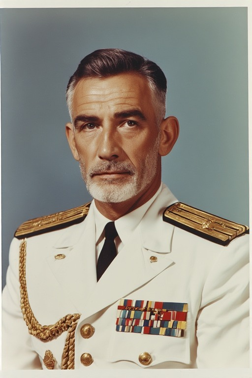
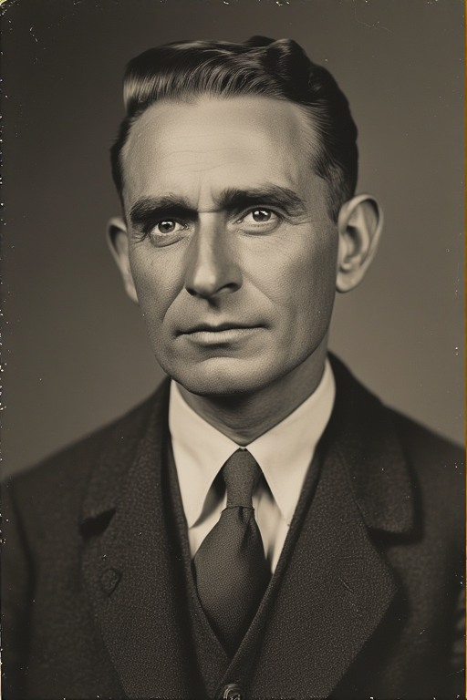
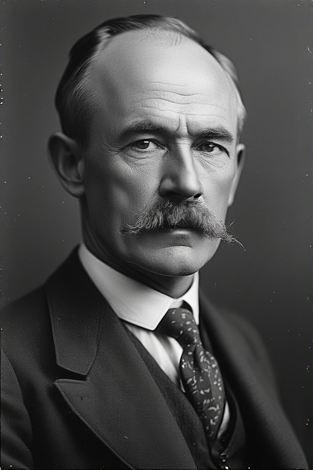

[1918 - Aujourd'hui]
Les présidents du second état















Au matin du 5 juin 1924, alors que le Président Oren prenait la route de l'exil et que le drapeau bicolore des insurgés flottait sur l'Hôtel de Ville de Faellyne, l'Oslavie cessa techniquement d'exister en tant qu'État de droit. Face à ce vide vertigineux, une coalition d'urgence composée de hauts magistrats, d'officiers vétérans et de représentants des syndicats agricoles se constitua à la Citadelle. Ce "Directoire de Crise", mené par le futur Président Vadim Korl, se donna une mission unique et absolue : empêcher la dissolution de la Patrie.
Cette période de sept mois reste gravée comme l'heure la plus dure, mais la plus nécessaire de notre histoire. Le Gouvernement Provisoire décréta la Loi Martiale sur l'ensemble du territoire. S'appuyant sur les "Brigades Rurales" (paysans montés à la capitale pour défendre leur droit à la terre symbolisé par la bande marron du drapeau), le gouvernement reprit le contrôle des quartiers séditieux, quartier par quartier. L'ordre fut rétabli, les approvisionnements sécurisés et les instigateurs du chaos traduits devant des tribunaux d'exception.
Ce n'était pas une tyrannie, mais une opération de survie. Une fois les rues pacifiées et les institutions purgées de leur faiblesse, le Gouvernement Provisoire tint sa promesse : il s'autodissout pour permettre l'organisation d'élections libres et ordonnées, qui portèrent Vadim Korl au pouvoir légitime.